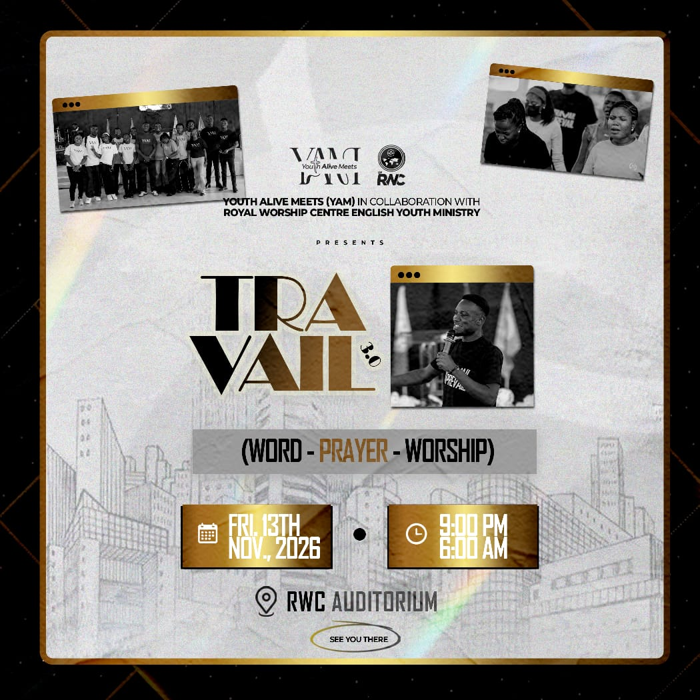
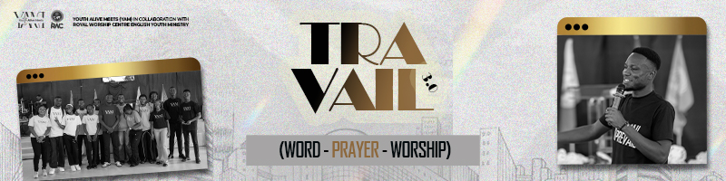

01
Sunday Fellowship
Join the live service for worship, teaching, and fellowship. Every Sunday 6:30 PM.
Listen to the serviceYAM × RWC English Youth Ministry
An overnight gathering
Word Prayer Worship
One night to gather in faith, seek God in prayer, and worship together. Youth Alive Meets, in collaboration with Royal Worship Centre English Youth Ministry, invites you to Travail 3.0.
Friday, 13 November · See you there


We are young people who have been made alive by the Word of God through the Holy Spirit. Join us for Sunday fellowship, spiritual growth, and community that transforms lives.
Sunday Service Live Stream
Grow Together
Simple, consistent spaces to hear God's Word, pray, and build genuine friendships.
01
Join the live service for worship, teaching, and fellowship. Every Sunday 6:30 PM.
Listen to the service02
Grow in faith through biblical teaching, reflection, and prayer with other young people.
Discover our mission03
Build encouraging relationships with young people committed to living out their faith.
What to expectWe are "Youth Alive Meets" (YAM) — young people who have been made alive by the Word of God through the Holy Spirit. We gather every Sunday to share fellowship in the Lord and receive the grace that builds us up and separates us from defeat and decadence in the world.
You are not here by chance. You have been chosen by the Lord Jesus. As you stay consistent with Him, you will look like Him. Everyday is a glorious day in His presence.